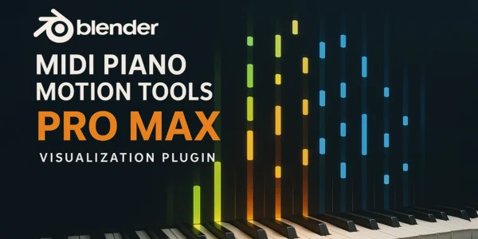
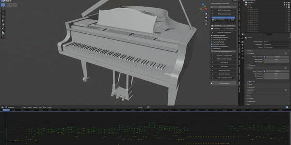
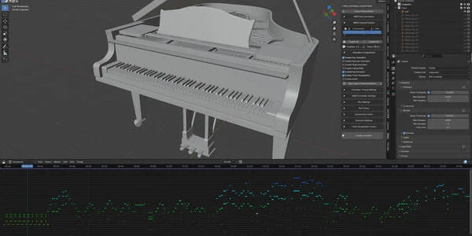
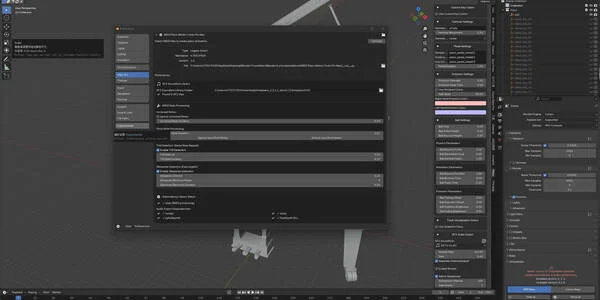
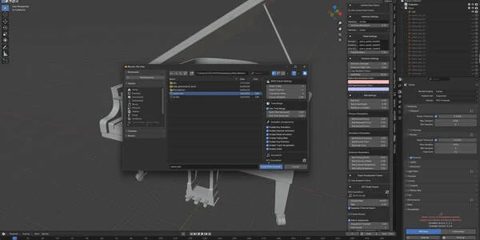
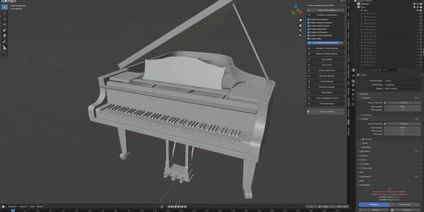
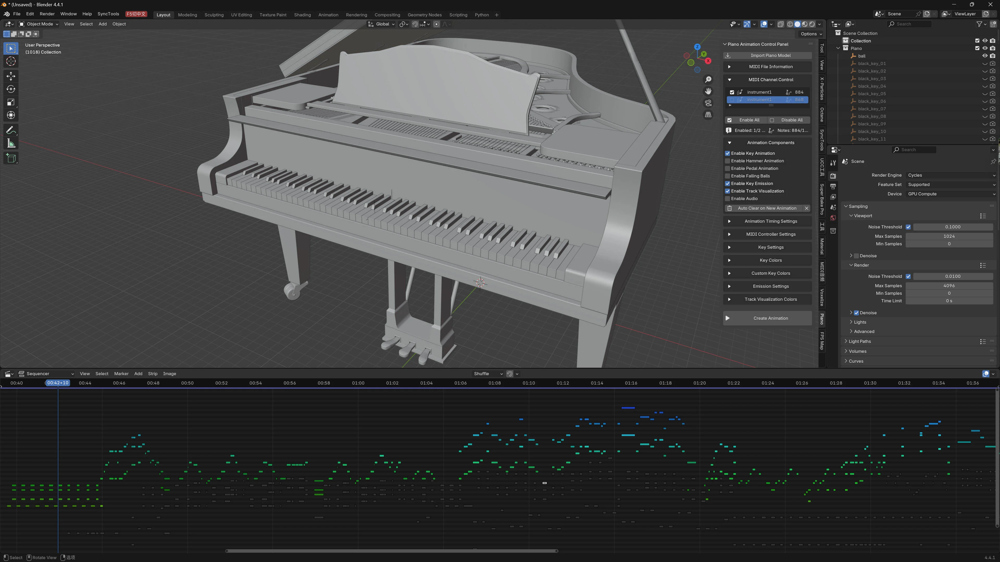
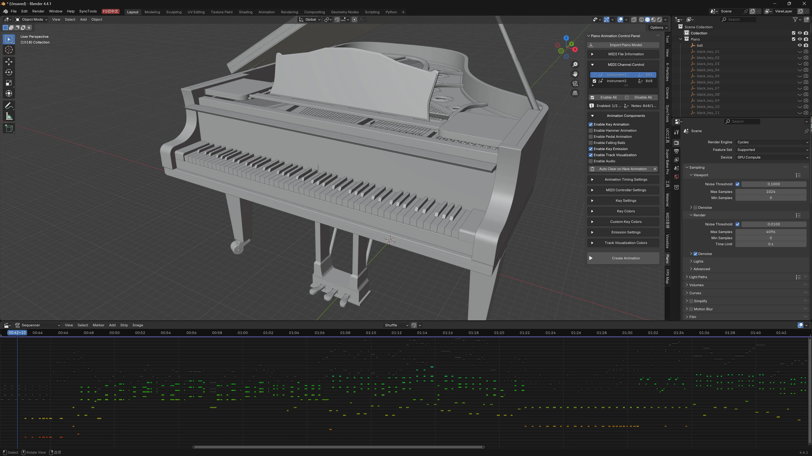
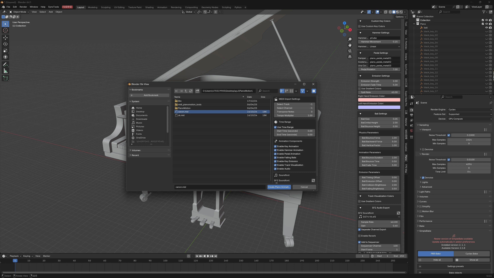

MIDI 钢琴动态工具 Pro Max – 将音乐转化为视觉魔法
让您的音乐栩栩如生 通过 MIDI Piano Motion Tools Pro Max 。这款终极 Blender 插件将 MIDI 文件转换为 令人惊叹的专业钢琴动画 .
无论是音乐视频、教程、视觉艺术还是现场表演，此工具让每个人都能轻松创建专业级动画。
注意：视频演示使用了其他语言， 但实际插件语言为英文
自动钢琴琴键动画，具有逼真的节奏
与音符同步的琴锤动画
踏板动画（延音、柔音、持续）
支持完整的 88 键范围（MIDI 21–108）。


动态按键发光效果，颜色可自定义
基于速度和彩虹渐变的颜色模式
每个通道和每个按键的颜色均可自定义。
球下落可视化
完整的 16 通道 MIDI 颜色管理
内置SF2 音色库 用于音频生成
按 MIDI 通道导出音频
支持自定义音色库
高质量 FluidSynth 渲染
多种插值模式（线性、常量、贝塞尔、智能）。
速度感应动画时长
支持 MIDI 控制器（弯音、调制）。
帧精度定时
批量动画清理和管理

直观的侧边栏用户界面 (View3D → Sidebar → Piano)
实时通道启用/禁用
每个通道的音频和动画静音
视觉序列编辑器集成
自动组织动画数据
自定义琴键命名规则
可编辑的时间、时长和发光强度
智能插值实现自然运动
完整的 MIDI 信息显示和诊断
音乐视频创作者
音乐教育者和学生
视觉艺术家和设计师
动画工作室
表演音乐家
任何想要精美 MIDI 可视化的人
导入内置钢琴模型（或使用您自己的钢琴模型）。
通过钢琴面板加载您的 MIDI 文件
配置按键、琴锤、动画、特效和颜色。
一键生成动画
根据需要调整通道和设置
使用 SF2 音色库导出音频
渲染您最终的钢琴演奏动画
兼容 Blender 4.2.0 及更高版本。
包含内置库：mido、numpy、scipy、fluidsynth
附带默认 SF2 音色库。
支持自定义音色库
高ly efficient F-curve organization
节点-based launch materials
完整的y supports 16-channel MIDI
高-quality piano models
Default SF2 音色库
流体Synth binary file
Required Python libraries
将您的 MIDI 文件转化为令人叹为观止的、富有表现力的钢琴演奏，吸引您的观众。
Get MIDI Piano 运动工具 Pro Max now!
MIDI Piano 运动工具 Pro Max - 将音乐转化为视觉魔法
让您的音乐栩栩如生 通过 MIDI Piano Motion Tools Pro Max, the ultimate Blender addon for creating stunning piano animations from MIDI files. Whether you're creating music videos, educational content, or artistic visualizations, this powerful tool makes professional piano animation accessible to everyone.
KEY FEATURES:
🎹 完整的Piano 动画 系统
- 自动 piano key animations with realistic timing
- Hammer strike animations synchronized with notes
- Pedal animations (sustain, soft, sostenuto)
- 支持 for 88-key piano range (MIDI notes 21-108)
🎨 高级Visual 效果s
- Dynamic key emission effects with customizable colors
- Rainbow gradient and velocity-based color schemes
- Per-channel and per-key color customization
- Falling ball effects for music visualization
- Multi-channel color management (16 MIDI channels)
🎵 音频集成
- 内置SF2 soundfont support 用于音频生成
- 分割 audio export by MIDI channel
- Custom soundfont library management
- 流体Synth integration for high-quality audio rendering
⚡ 专业的动画 控件
- Multiple interpolation modes (Linear, 常数, Bezier, 智能的)
- 速度-sensitive animation duration
- MIDI controller support (pitch bend, modulation)
- 帧-accurate timing synchronization
- Batch animation clearing and management
🎛️ Flexible 工作流
- 直观的sidebar panel interface (View3D > Sidebar > Piano)
- 实时 MIDI channel enable/disable controls
- Per-channel mute/unmute for audio and animation
- 视觉序列编辑器集成
- 自动 animation data organization
🔧 高级自定义
- Custom key naming conventions support
- 调整able animation timing and duration
- Configurable emission intensity and fade
- 智能interpolation for natural movement
- 全面的MIDI information display
PERFECT FOR:
✓ Music video producers and content creators
✓ Music educators creating visual learning materials
✓ Artists exploring music visualization
✓ 动画 studios requiring piano scenes
✓ Musicians showcasing their performances
✓ Anyone wanting to visualize MIDI music beautifully
WORKFLOW:
1. 导入 or append the included piano model (or use your own custom piano)
2. 加载 your MIDI file through the Piano panel
3. 配置 animation options (keys, hammers, effects, colors)
4. 生成 animation with a single click
5. Fine-tune using the built-in channel controls
6. 导出 audio if needed using SF2 soundfonts
7. Render your beautiful piano animation
TECHNICAL HIGHLIGHTS:
- 支持 Blender 4.2.0 and above
- Includes bundled libraries (mido, numpy, scipy, fluidsynth)
- Comes with default SF2 soundfont
- Custom soundfont library support
- Efficient F-curve management and organization
- 材料 node-based emission system
- 完整的16-channel MIDI support
INCLUDED ASSETS:
- 高-quality piano 3D model (piano5.blend)
- Default SF2 soundfont (Plants vs Zombies Nintendo DS)
- 流体Synth binaries for audio rendering
- All required Python libraries
立即获取 MIDI Piano Motion Tools Pro Max，将您的 MIDI 文件转化为令人叹为观止的动画表演，吸引您的观众！